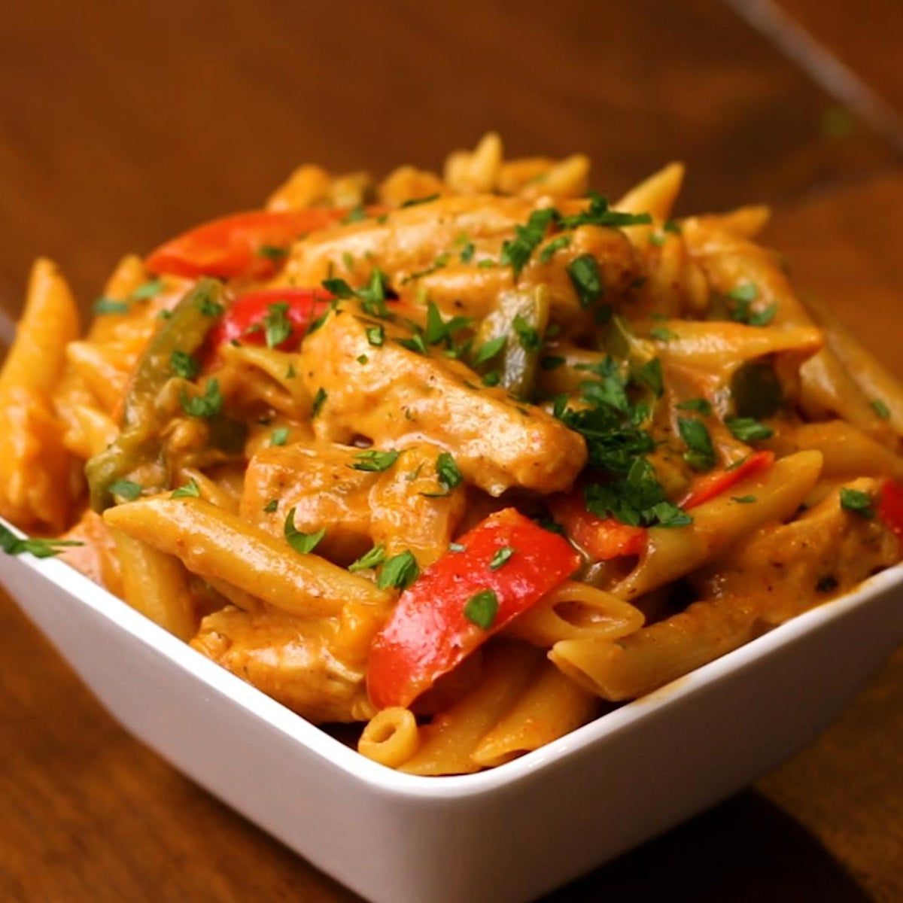

Fajita Pasta

Description
Fajita pasta is a simple to make pasta dish that provides a satisfying mix of spice and creamy flavour. It is a quite versatile dish
that can be made with a variety of different ingredients and can be easily tailored to the individual making it. The dish can also be made vegetarian if desired and
can be whipped up in no time
Ingredients
- 1 Chicken Breast(Cubed)
- 1/2 Red Bell Pepper(Sliced)
- 1/2 Green Bell Pepper (Sliced)
- 1/2 Brown Onion(Sliced)
- Penne Pasta
- Mozarella Cheese
- Chilli Powder
- Garlic Powder
- Fajita Seasoning
- Paprika
- Cooking Cream
- Salt
- Cooking Oil
Method
- Add salt to a pot of water and leave it to boil
- Once water is boiling add desired amount of pasta
- While pasta is being cooked slice up chicken, red bell pepper, green bell pepper, onion and any other vegetables you wish to add
- Add cooking oil into a pan and allow the pan to heat up
- Add Cubed Chicken Breast into pan and allow it become browned
- Once chicken has begun to brown add 1 tablespoon of fajita seasoning to pan and mix
- Add Sliced vegetables to pan and add 1 teaspoon of paprika, chilli powder and garlic powder. Add additional fajita seasoning if desired
- Ensure chicken is cooked all the way through (Approximately 8-10 mins)
- Once pasta is al dente ensure to drain pasta but retain some of the pasta water
- Add Chicken and vegetables into the pot with the pasta and add cooking cream as desired
- Mix to ensure everything is evenly coated and add additional fajita seasoning if needed
- Add half a cup of the pasta water to ensure sauce does not become too thick
- Top with mozarella cheese and once thoroughly mixed serve